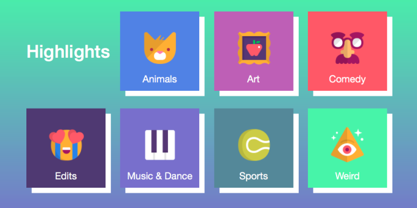

What Exactly Was Vine?
Vine was a video-sharing app designed to allow users to film and share super short video clips that could be linked together in one video for a total of six seconds. Each Vine video (simply called a "vine") played in a continuous loop. They could be embedded and viewed directly in Twitter’s timeline or into any web page.
How the Vine App Worked?
Vine was an app that could be access and viewed on the web, but you needed to use it as a mobile app on a compatible iOS or Android device to be able to actually create and share videos. The look and feel of the app was very similar to Instagram, showing you a scrollable feed of all your friends’ videos in the home feed, a profile, a search tab, and an interactions tab.
Users could either upload existing clips into the Vine video editor or film them directly through the app. Whether it was one clip on its own or several smaller clips with cuts between them, Vine eventually introduced more advanced editing tools that allowed users to trim their clips and even add music from their music library that could optionally play to match the beat of the song playing.

Exploring and Interacting on Vine:
Vine offered users a lot of great ways to discover new videos. The Explore tab was broken up into sections like Trending, Comedy and Art, which would show recently popular videos in those categories.
Vine would also often take a very popular Vine user and feature them on a spotlight tab by showing a collection of their best and most popular videos. Tons of memes were born on Vine, which spread practically overnight.
Unlike Instagram, users could also "revine" videos from other users to share them on their own profiles. This was great exposure for users who wanted to make their mark on the platform and it was how lots of videos would go viral very fast.
Vine has been poorly missed since its demise, but many of of the most popular Vine stars have moved to platforms like Instagram and YouTube to keep creating and interacting with their fans. Meanwhile, it appears that Vine might be making a comeback.